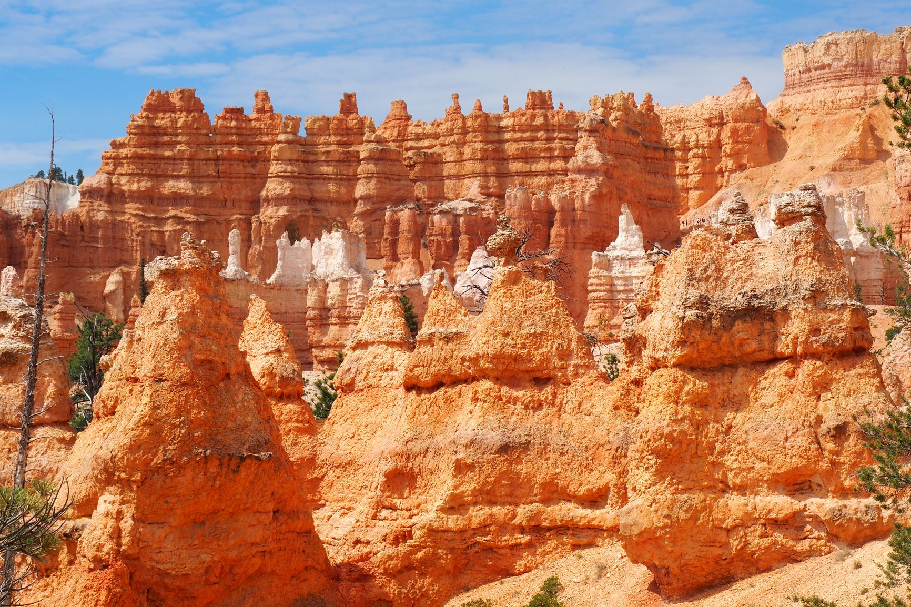
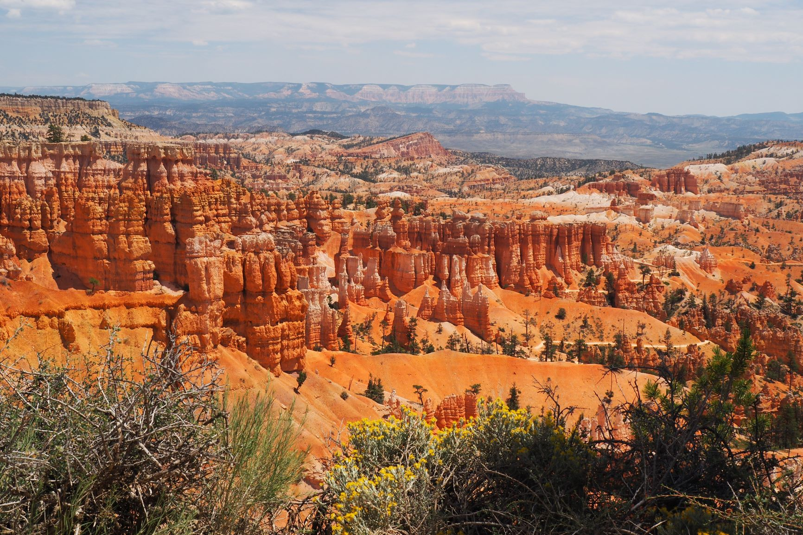
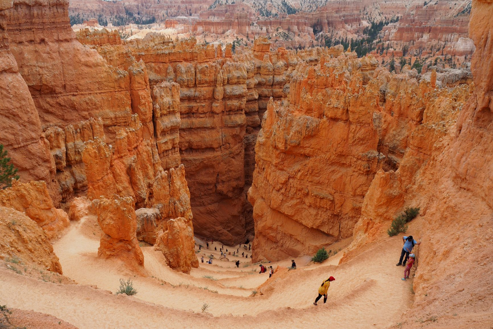

| Home | Yosemite National Park | Zion | Bryce Canyon | Monument Valley | Grand Canyon |
Bryce Canyon is weer een heel ander park. Het is veel kleiner en het is ook geen ’echte’ canyon. Het grillige landschap met de bijzondere hoodoos (aardpiramides of aardpijlers) werd niet uitgesleten door regenval en water, maar is ontstaan door een combinatie van winderosie, watererosie en ijserosie.
De formaties bestaan voornamelijk uit kalk- en zandsteen en vallen op door de vele kleurschakeringen. Je hebt van bovenaf een prachtig uitzicht op het natuurlijk gevormde amfitheater. Maar je kan ook verschillende wandelingen doen dwars door de pilaren en pijlers. Meer lezen.
  